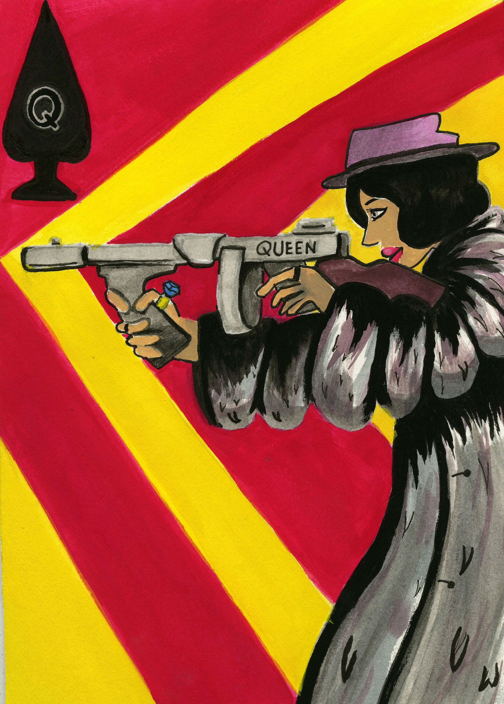
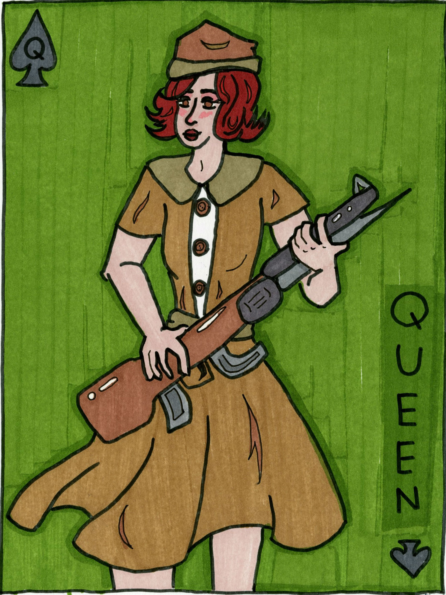
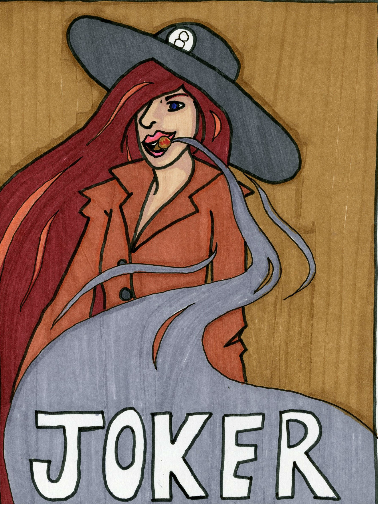

 

The Queen of Cards
Make notes on the process here! Why did you do this project? Was it something you had a real vision for or was it a project you really struggled with?
Talk about the process here too, why did you use the materials you did and how did they work out for you? Are they materials you normally use or were they a struggle? Was it hard for you to master the material?
Reflection on the project. What went wrong and what went right? Would you ever touch these materials or this subject again? If so, why would you? If not, why wouldn't you?